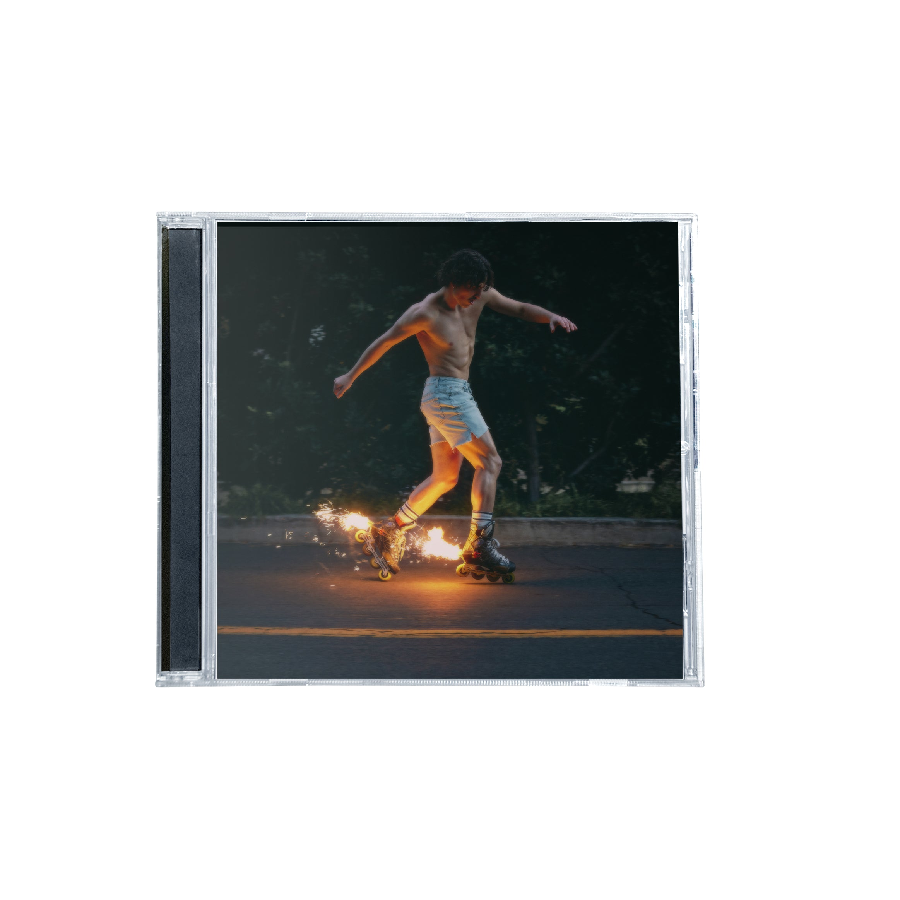
LP / 001
Fireworks &
Rollerblades
The debut that turns tenderness into arena-sized catharsis.
- Beautiful Things
- Slow It Down
- Cry
Unofficial fan archiveEst. 2024
Big feelings. Higher notes.
A heart in perpetual motion.
01 / The story
From a piano in Monroe, Washington to stages around the world, Benson Boone has built a universe from honest lyrics, impossible vocals, and the occasional backflip.
02 / In pictures
Six frames from interviews, festival fields, radio rooms, and packed stages.
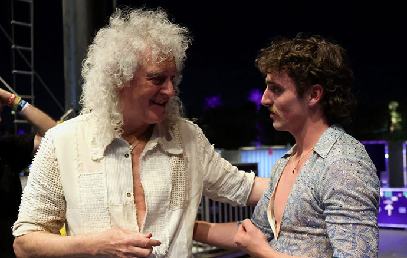
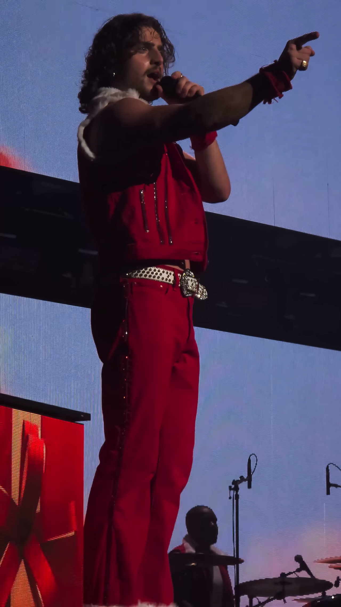
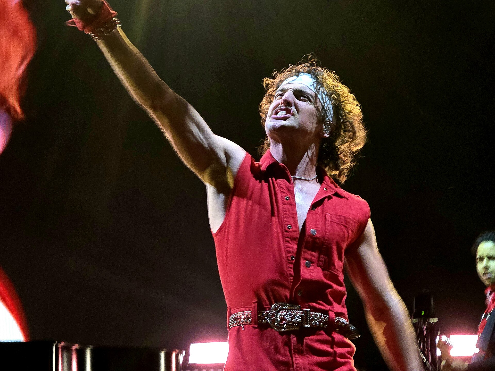
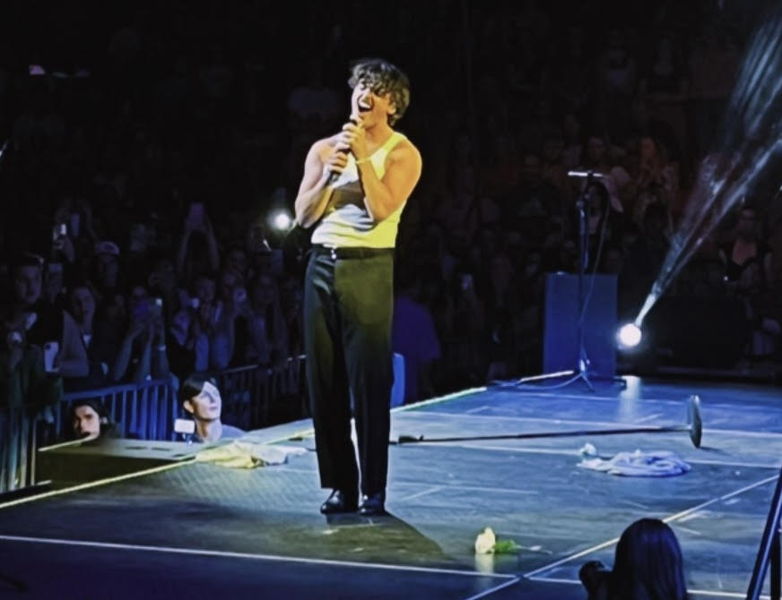
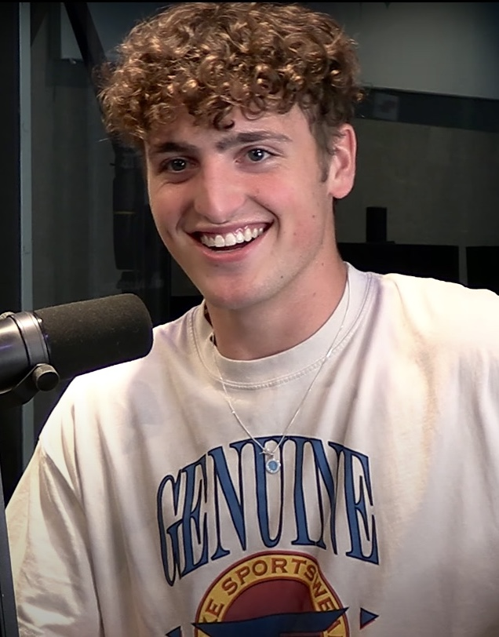
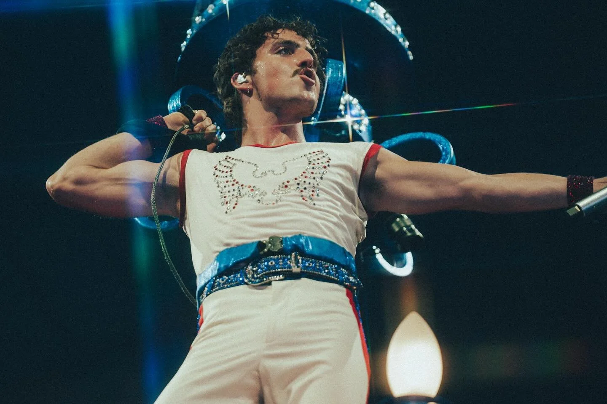
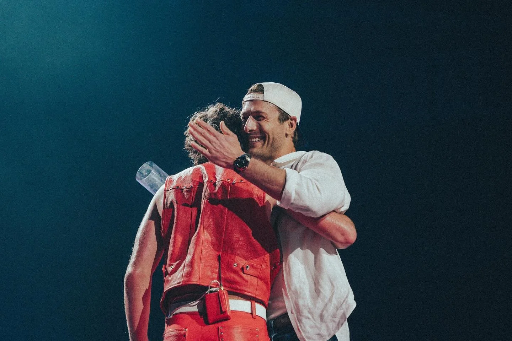
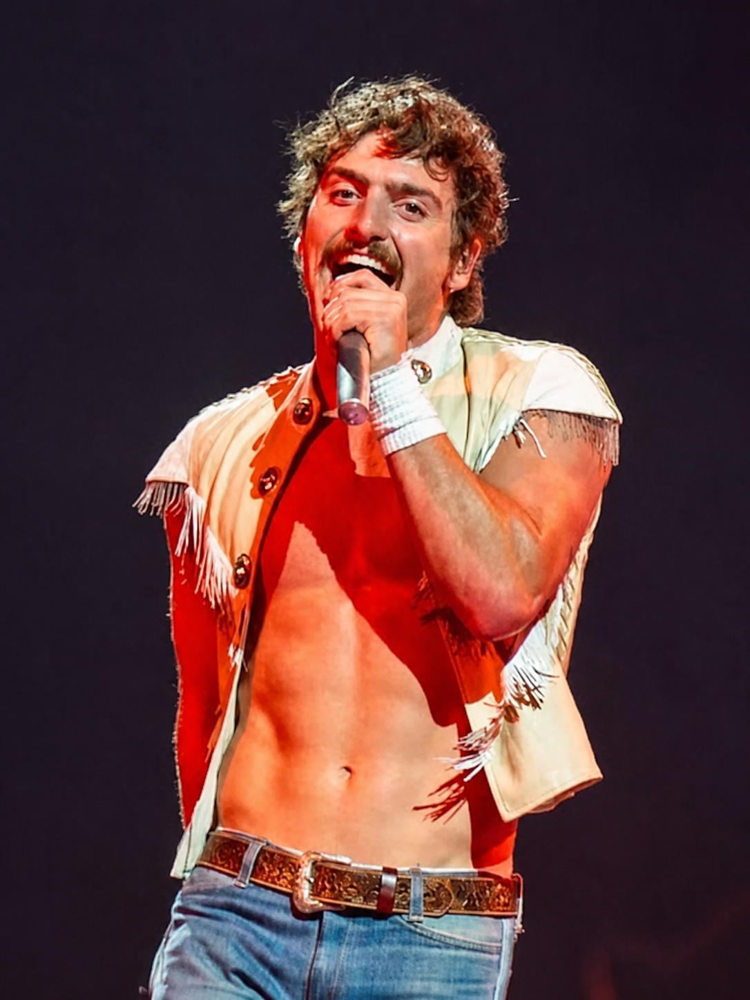
Archive images via Wikimedia Commons. Brian May and Benson Boone at Coachella photographed by Kevin Mazur/Getty Images for Coachella, via Brian May’s official website. American Heart photographs by Shayden J. Schoonover / Afterglow ATX. Wanted Man image supplied by the fan-site creator.
02½ / Airborne
A rapid-fire compilation of the flips that became part of the Benson Boone live-show signature.
Watch on YouTube ↗FLIP COUNTER: MANYVideo by MsMojo · YouTube
03 / On repeat
Two chapters. One unmistakable voice.

LP / 001
The debut that turns tenderness into arena-sized catharsis.
LP / 002
Bright, theatrical, and fully alive—the sound of a performer leaning into joy.
Before the albums
Two early collections established the piano-led honesty and towering choruses that would become Benson’s signature.
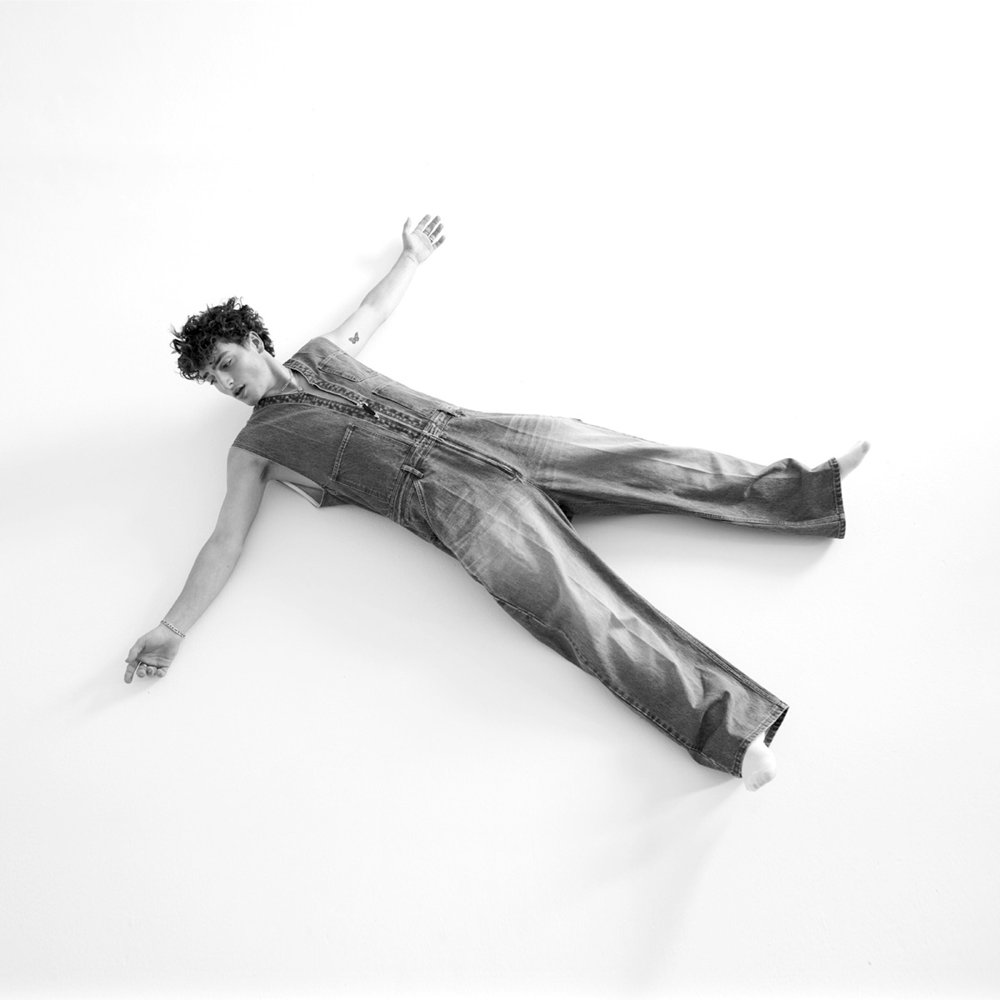
8 tracks · 24:05
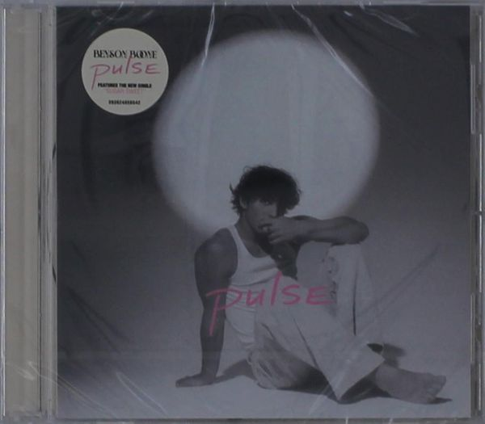
5 tracks · 15:37
Complete album tracklists
Every track from both standard-edition albums. Together with the EP lists above, all four releases are complete. Tap any title to bring it into the mini player.
GHOST TOWN · In The Stars · NIGHTS LIKE THESE · Sugar Sweet · What Was · To Love Someone · Pretty Slowly · Death Wish Love · The Time Of My Life
04 / By the numbers
Career performance totals reported by setlist.fm. Search all 98 songs, compare the live staples, and separate Benson originals from the covers he has performed.
Loading career song statistics…
Counts include multiple performances of the same song within one setlist and reflect fan-submitted data checked August 11, 2026. Explore Benson Boone’s full song statistics ↗
05 / Around the world
Drag the satellite Earth. Follow the feeling. Every red pin marks a city singing the same words back.
See official tour dates ↗DRAG TO ROTATE · SCROLL TO ZOOM · HOVER OVER A DOT
Loading performance locations…06 / Where the heart has been
Loading geographic performance statistics…
Based on reported Benson Boone performances from 2021 through Los Angeles night two on August 11, 2026. Boroughs and neighboring municipalities follow the city names used by setlist.fm.
07 / Live in 2026
48 tracked performances across the United States, Asia, and Australia, including the JAS Aspen festival date. The tour follows the sold-out American Heart World Tour.
Tickets & updates ↗After completing two nights at Crypto.com Arena in Los Angeles, the Wanted Man Tour heads to T-Mobile Arena in Las Vegas on Friday, August 14.
Check official tour updates ↗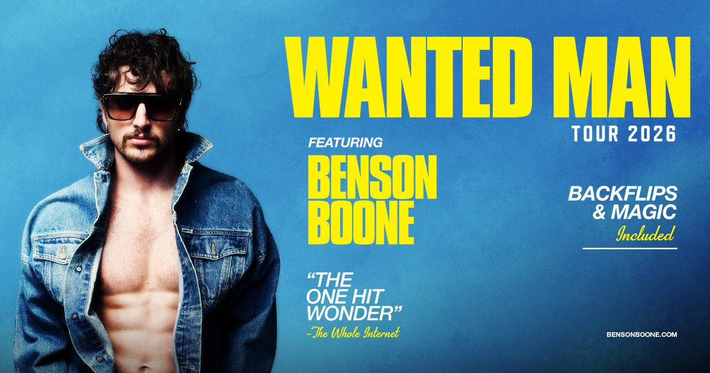
Venue figures are approximate published concert capacities. Actual capacity and sellable inventory vary with stage placement, production holds, suites, and closed sections.
Pittsburgh, PAPPG Paints Arena
Baltimore, MDCFG Bank Arena
Brooklyn, NYBarclays Center · 2 nights
Newark, NJPrudential Center
Boston, MATD Garden
Albany, NYMVP Arena
Cincinnati, OHHeritage Bank Center
Indianapolis, INGainbridge Fieldhouse
Milwaukee, WIFiserv Forum
Rosemont, ILAllstate Arena
St. Louis, MOEnterprise Center
Tulsa, OKBOK Center
Denver, COBall Arena
Seattle, WAClimate Pledge Arena
Portland, ORModa Center
San Jose, CASAP Center · ended early
Sacramento, CA POSTPONEDGolden 1 Center · new date TBD
Los Angeles, CA 2 NIGHTS COMPLETECrypto.com Arena · same 20-song setlist both nights
Las Vegas, NV NEXTT-Mobile Arena
San Diego, CAPechanga Arena
Phoenix, AZMortgage Matchup Center
San Antonio, TXFrost Bank Center
Dallas, TXAmerican Airlines Center
New Orleans, LASmoothie King Center
Jacksonville, FLVyStar Veterans Memorial Arena
Charlotte, NCSpectrum Center
Birmingham, ALLegacy Arena at the BJCC
North Little Rock, ARSimmons Bank Arena
Kansas City, MOT-Mobile Center
Omaha, NECHI Health Center
Casper, WYFord Wyoming Center
Spokane, WA RESCHEDULEDNumerica Veterans Arena · originally Aug. 2
Seoul, South KoreaKINTEX Hall 10
Tokyo, JapanToyota Arena Tokyo
SingaporeThe Star Theatre
Brisbane, QLDBrisbane Entertainment Centre
Brisbane, QLDBrisbane Entertainment Centre
Brisbane, QLDBrisbane Entertainment Centre
Melbourne, VICRod Laver Arena
Melbourne, VICRod Laver Arena
Melbourne, VICRod Laver Arena
Sydney, NSWAfterpay Arena
Sydney, NSWAfterpay Arena
Sydney, NSWAfterpay Arena
Show archive / Setlists
Used across the Wanted Man Tour · both Los Angeles nights followed this running order
View L.A. night 1 source on setlist.fm ↗Pittsburgh was the outlier: Benson performed “What Do You Want” after “The Time of My Life.” It is the only Wanted Man Tour performance currently reported with that song. The night also introduced the unreleased piano song fans and setlist editors are calling “Love You Again,” though that title is not confirmed as an official release title.
Pittsburgh source ↗Production notes: “Wanted Man” video intro before song 1; “Wanted Man” video interlude before the front-stage section.
The main list shows the reported post-Pittsburgh running order. Pittsburgh is preserved separately because opening night included “What Do You Want.” Future swaps, covers, skipped songs, and surprises will be marked as variations. Setlists and unreleased-song titles are fan-reported and may be corrected later.
Status checked August 11, 2026 against BensonBoone.com, Warner Records, official venue and regional ticketing, Live Nation, AXS, and Frontier Touring. “Played” means the date passed with evidence the show took place. Rosemont includes both July 24 and July 25. The September 4 JAS Aspen appearance is included in the tracked routing. Sacramento remains postponed. The Spokane arena concert was moved from August 2 to September 6 because of ongoing wildfire conditions; original tickets are automatically honored. Check the official site before making travel plans.
08 / Past tour archive
The sold-out arena chapter that came before Wanted Man—preserved here as a compact tour archive.
The show opened with “I Wanna Be the One You Call,” moved through an acoustic-style middle passage and a rotating surprise cover, closed the main set with “Beautiful Things,” then returned for “Cry.”
Opening night: August 22, 2025 at Xcel Energy Center in St. Paul.
Final night: March 15, 2026 in Birmingham, completing the rescheduled European finale.
Signature moment: a surprise cover slot that ranged from Coldplay and Adele to Queen, Keane, Bruno Mars, Alicia Keys, and more.
Explore the cover archive ↗The Fireworks & Rollerblades era
All 79 performances currently indexed for 2024, ordered from earliest to latest. Each card identifies whether it was part of the Fireworks and Rollerblades World Tour.
Loading 2024 shows…
Show information and fan-reported setlists sourced from setlist.fm’s 2024 Benson Boone archive ↗. Entries may be edited by its community.
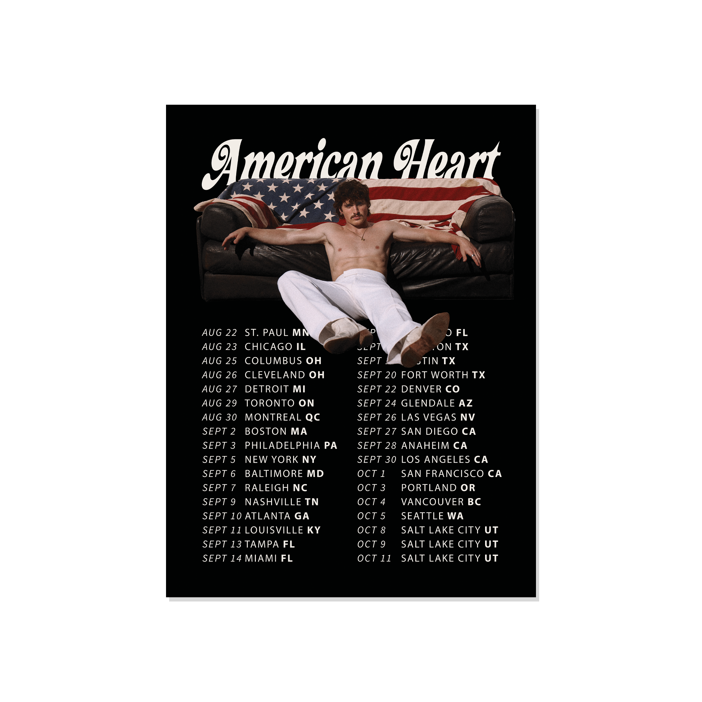
Complete performance index
Every 2025 performance currently indexed by setlist.fm. Open any show to see its reported songs; four shows currently have no submitted setlist.
Loading 98 shows…
Show information and fan-reported setlists sourced from setlist.fm’s 2025 Benson Boone archive ↗. Entries may be edited by its community.
The story continues
All 29 performances currently indexed for 2026: the American Heart finale, special appearances, and the Wanted Man shows reported so far.
Loading 2026 shows…
“I want the songs to feel like
they’ve always belonged to you.”